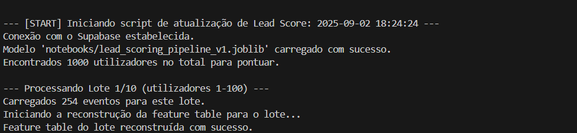
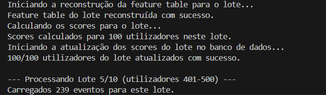
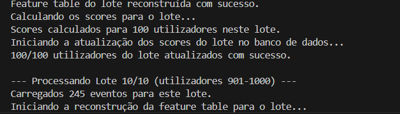
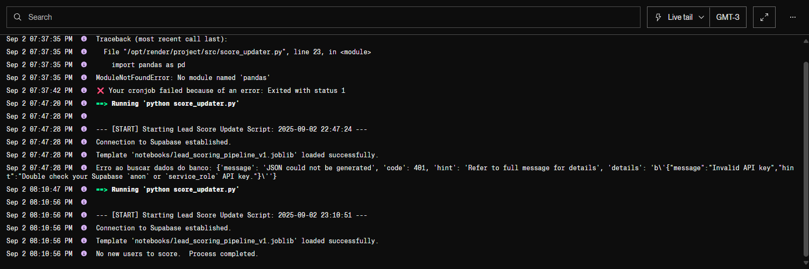
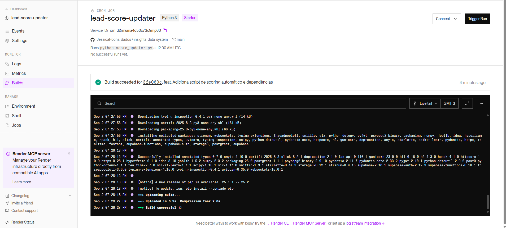

6. Automação (Produção)
6.1 Scripts Automatizados
A etapa final foi operacionalizar o modelo de Lead Scoring, transformando-o de uma análise estática num sistema de negócio autónomo.
- Script:
score_updater.py. - Plataforma: Cron Job no Render.
- Tarefa: Executar diariamente, conectar-se ao BD, buscar utilizadores sem
lead_score, carregar o pipeline (lead_scoring_pipeline_v1.joblib), gerar as previsões e atualizar a colunalead_scorena tabelausers.
Desafio de Produção e Solução (Processamento em Lotes):
Durante o teste local do script de produção, foi encontrado um erro 414 Request-URI Too Large.
* Causa: O script tentava buscar os eventos de todos os utilizadores (1000) numa única requisição à API, criando uma URL longa demais para o servidor.
* Solução: Foi implementada uma lógica de processamento em lotes (batch processing). O script foi modificado para processar os utilizadores em "fatias" de 100.
O código-fonte abaixo ilustra esta lógica de produção robusta:
```python
Definir o tamanho do lote
BATCH_SIZE = 100 users_processed = 0
Obter o total de utilizadores para pontuar
users_to_score = supabase.table('users').select('user_id', count='exact').execute().count
while users_processed < users_to_score: print(f"--- Processando Lote (utilizadores {users_processed} a {users_processed + BATCH_SIZE}) ---")
# 1. Buscar um "lote" de utilizadores
user_batch = supabase.table('users').select('user_id', 'visitor_id') \
.is_('lead_score', 'null') \
.range(users_processed, users_processed + BATCH_SIZE - 1) \
.execute().data
if not user_batch:
break # Sai do loop se não houver mais utilizadores
# ... (Lógica para buscar eventos apenas para este lote) ...
# ... (Construir a feature_table apenas para este lote) ...
# 2. Calcular scores para o lote
scores = pipeline.predict_proba(feature_table)[:, 1]
# 3. Atualizar o banco de dados para o lote
updates = []
for user, score in zip(user_batch, scores):
updates.append({'user_id': user['user_id'], 'lead_score': score})
supabase.table('users').upsert(updates).execute()
users_processed += len(user_batch)
print("Atualização de Lead Score concluída.")
Prova de Execução Local do Script
As imagens abaixo demonstram o script score_updater.py a ser executado localmente, validando a lógica de processamento em lotes. O script processa com sucesso os 1.000 utilizadores em 10 lotes separados de 100, evitando sobrecarga do servidor.
Início do Processo (Lote 1 de 10): 
Meio do Processo (Lote 5 de 10): 
Fim do Processo (Lote 10 de 10): 
Monitoramento e Desafios de Implantação:
O deploy no Render foi monitorado através do dashboard de "Events". Como é comum em qualquer processo de deploy do mundo real, o processo revelou bugs de produção que foram diagnosticados e corrigidos metodicamente.
O log de eventos abaixo ilustra perfeitamente este processo de depuração:

A análise do log acima mostra a resolução de dois bugs clássicos de produção:
- Erro (07:37:35 PM):
ModuleNotFoundError: No module named 'pandas'- Causa: O
requirements.txtenviado para o Render não continha as bibliotecaspandasenumpy. - Solução: As dependências foram adicionadas ao
requirements.txte um novo commit foi enviado.
- Causa: O
- Erro (07:47:28 PM):
Invalid API key- Causa: Após corrigir o primeiro bug, o script foi executado, mas falhou ao conectar-se ao Supabase. As credenciais (
SUPABASE_KEY) nas Variáveis de Ambiente do Render estavam incorretas. - Solução: As credenciais foram corrigidas diretamente no dashboard do Render.
- Causa: Após corrigir o primeiro bug, o script foi executado, mas falhou ao conectar-se ao Supabase. As credenciais (
Após as correções, o "build" foi bem-sucedido, como mostra o dashboard do Render:

O Cron Job final (executado às 08:18:56 PM no primeiro log) foi executado com sucesso ("Process completed"), validando que o sistema automatizado estava 100% funcional.
A imagem abaixo, do banco de dados Supabase, mostra o resultado final: a coluna lead_score corretamente preenchida pelo script automatizado.

Prova de Execução Autónoma (Confiabilidade do Sistema)
Finalmente, para comprovar que o sistema não foi apenas implementado, mas é fiável a longo prazo, o log de eventos do Render abaixo (cron_log_diario.png) mostra o Cron Job a ser executado com sucesso, pontualmente, todos os dias (14, 15 e 16 de Setembro), dias após a implementação original.